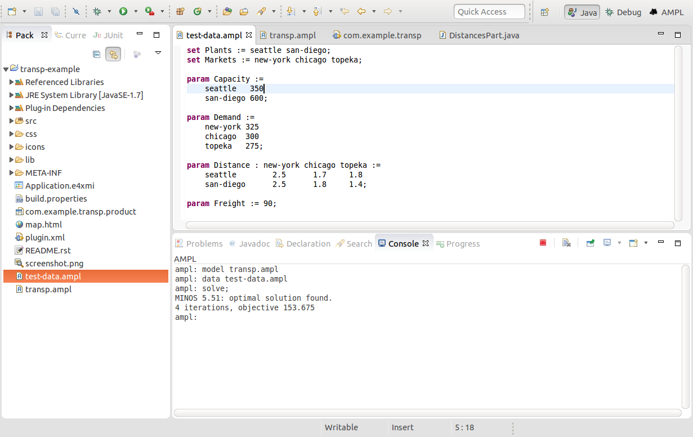
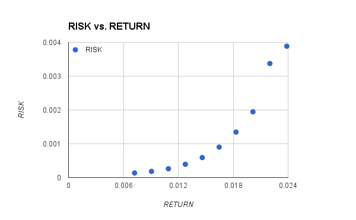

<!doctype html> <html lang="en">
<head>
  <meta charset="utf-8">

  <title>AMPL API: Interesting examples/implementations</title>

  <meta name="author" content="Victor Zverovich">

  <meta name="apple-mobile-web-app-capable" content="yes" />
  <meta name="apple-mobile-web-app-status-bar-style" content="black-translucent" />

  <meta name="viewport" content="width=device-width, initial-scale=1.0, maximum-scale=1.0, user-scalable=no">

  <link rel="stylesheet" href="../../common/reveal.js/css/reveal.css">
  <link rel="stylesheet" href="../../common/reveal.js/css/theme/beige.css" id="theme">

  <!-- For syntax highlighting -->
  <link rel="stylesheet" href="../../common/reveal.js/lib/css/zenburn.css">

  <!-- If the query includes 'print-pdf', include the PDF print sheet -->
  <script>
    if( window.location.search.match(/print-pdf/gi) ) {
      var link = document.createElement('link');
      link.rel = 'stylesheet';
      link.type = 'text/css';
      link.href = '../../common/reveal.js/css/print/pdf.css';
      document.getElementsByTagName('head')[0].appendChild(link);
    }
  </script>

  <style>
  body {background: white;}
  comment {display: none;}

  .reveal h1 {
    padding-bottom: 50px;
  }
  
  .reveal h1,
  .reveal h2 {
    font-size: 200%;
    text-transform: none;
    text-align: center;
    margin: 0;
  }
  .reveal section:first-of-type {
    text-align: center;
  }
  .reveal section {
    text-align: left;
  }
  
  .reveal p {
    margin-top: 10px;
    margin-bottom: 10px;
  }

  .reveal .MathJax_Display {
    margin-top: 20px;
    margin-bottom: 20px;
  }
  .reveal .plot {
    box-shadow: 0 0 20px #888888;
    margin-left: auto; margin-right: auto;
  }
  
  .reveal .transp-image {
    display: block;
    margin-left: auto;
    margin-right: auto;
    border: none;
    box-shadow: none;
  }
  
  /* Fix nohighlight styles. */
  .reveal pre code { display: block; background: #3F3F3F; color: #DCDCDC; }
  
  /* Fix image styles. */
  .reveal section img { border: none; box-shadow: none; }
  
  img.float-right {
    clear:right;
    float:right;
  }

  div .new { color: red; }

  /* D3 styles */
  .node circle {
    fill: #fff;
    stroke: steelblue;
    stroke-width: 1.5px;
  }

  .node {
    font: 20px sans-serif;
  }

  .link {
    fill: none;
    stroke: #ccc;
    stroke-width: 1.5px;
  }
  
  .chart rect {
    fill: steelblue;
  }

  .chart .bar text {
    fill: white;
    font: 20px sans-serif;
    text-anchor: end;
  }
  .chart .axis text {
    font: 20px sans-serif;
    fill: black;
  }
  .chart .x.axis text {
    font: 16px sans-serif;
  }

  .chart .axis path,
  .chart .axis line {
    fill: none;
    stroke: #000;
    shape-rendering: crispEdges;
  }
  .chart .y.axis line,
  .chart .y.axis path {
    display: none;
  }
  .reveal table td { border-bottom: 0px; }
  
  .reveal pre code { max-height: 500px; }
  </style>

  <script type="text/javascript" charset="utf-8" src="MathBox.js/vendor/domready.js"></script>
  <script type="text/javascript" charset="utf-8" src="MathBox.js/build/MathBox-bundle.js"></script>

  <link href="MathBox.js/base.css" rel="stylesheet" type="text/css" media="screen">  
</head>

<body>
<script src="../../common/reveal.js/lib/js/head.min.js"></script>
<script src="../../common/reveal.js/js/reveal.js"></script>


<div class="reveal">
<!-- Any section element inside of this container is displayed as a slide -->
<div class="slides">

<section data-markdown data-separator="---">
<script type="text/template">
AMPL API: Interesting examples/implementations
==============================================

Victor Zverovich

<small><a href="mailto:viz@ampl.com">viz@ampl.com</a></small>

AMPL Optimization Inc.

<br>

<small>University of Santiago de Compostela, <br>
January 18-19, 2016, Spain</small>

---

## Outline

* RCP application using AMPL Java API

  * Transportation model
  * Demo

* C++ API example: efficient frontier

* Real world example: Cassotis QuanΔec

* References

---

## Example: RCP application using AMPL API

* Eclipse 4 Rich Client Platform (RCP) application with optimization support via AMPL API.
* Built with
  - Eclipse for RCP and RAP Developers available from
    https://www.eclipse.org/downloads/.
  - AMPL Plug-in for Eclipse: http://ampl.com/dl/IDE/repository.
* Uses a simple transportation model by George Dantzig (1963).
* Source code is available on GitHub: https://github.com/ampl/transp-example

---

## Transportation model

```cs
set Plants;
set Markets;

# Capacity of plant p in cases
param Capacity{p in Plants};

# Demand at market m in cases
param Demand{m in Markets};

# Distance in thousands of miles
param Distance{Plants, Markets};

# Freight in dollars per case per thousand miles
param Freight;

# Transport cost in thousands of dollars per case
param TransportCost{p in Plants, m in Markets} :=
    Freight * Distance[p, m] / 1000; 

# Shipment quantities in cases
var shipment{Plants, Markets} >= 0;

# Total transportation costs in thousands of dollars
minimize cost:
  sum{p in Plants, m in Markets} TransportCost[p, m] * shipment[p, m];

# Observe supply limit at plant p
s.t. supply{p in Plants}:
  sum{m in Markets} shipment[p, m] <= Capacity[p];

# Satisfy demand at market m
s.t. demand{m in Markets}:
  sum{p in Plants} shipment[p, m] >= Demand[m];
```

---

## Developer Perspective


---

## Architecture

<div style="text-align: center;">

</div>

---

## Demo

1. Testing on a small data set

2. Interactive data modification

3. TranspService: manages data and AMPL session

4. Multiple views for the same data

---

## Testing on a small data set



---

## TranspService

Data:

```java
public class TranspService {
  private Plant[] plants = new Plant[] {
      new Plant("Seattle", 350, new LatLng(47.6097, -122.3331)),
      new Plant("San Diego", 500, new LatLng(32.7150, -117.1625)),
      new Plant("Charlotte", 250, new LatLng(35.2269, -80.8433)) };

  // distances[i][j] is a distance from plant i to market j in thousands of
  // miles
  private double[][] distances = new double[][] {
      new double[] { 2857, 2064, 1851, 2529 },
      new double[] { 2761, 2083, 1514, 2411 },
      new double[] { 629, 755, 1024, 447 } };

  // Freight in dollars per case per thousand miles
  private double freight = 90;

  // shipments[i][j] is a shipment from plant i to market j in cases
  private double[][] shipments = new double[][] {
    new double[4], new double[4], new double[4] };

  // ...
```

---

## TranspService

Optimization:
```java
public void optimize() throws IOException {
  try (AMPL ampl = new AMPL()) {
    // Load model.
    ampl.read(getResourceURL("transp.ampl").getPath());

    // Pass data to AMPL.
    Object[] plantIDs = new Object[plants.length];
    DataFrame df = new DataFrame(1, "Plants", "Capacity");
    for (int i = 0; i < plants.length; i++) {
      plantIDs[i] = i;
      df.addRow(i, plants[i].capacity);
    }
    ampl.setData(df, "Plants");

    Object[] marketIDs = new Object[markets.length];
    df = new DataFrame(1, "Markets", "Demand");
    for (int i = 0; i < markets.length; i++) {
      marketIDs[i] = i;
      df.addRow(i, markets[i].demand);
    }
    ampl.setData(df, "Markets");

    df = new DataFrame(2, "Plants", "Markets", "Distance");
    df.setMatrix(distances, plantIDs, marketIDs);
    ampl.setData(df);

    ampl.getParameter("Freight").set(freight);

    // Solve the problem.
    ampl.solve();

    // Get solution.
    double[] data = ampl.getData("shipment")
      .getColumnAsDoubles("shipment");
    int index = 0;
    for (int i = 0; i < plants.length; i++) {
      for (int j = 0; j < markets.length; j++)
        shipments[i][j] = data[index++];
    }
    for (ShipmentsChangeListener listener : shipmentsChangeListeners)
      listener.shipmentsChanged();
  }
}
```

---

## MapPart

```java
@PostConstruct
public void postConstruct(Composite parent,
                          final TranspService service)
    throws IOException {
  browser = new Browser(parent, SWT.NONE);
  browser.setUrl(service.getResourceURL("map.html").toString());

  browser.addProgressListener(new ProgressListener() {
    @Override
    public void completed(ProgressEvent event) {
      addMarkers(service.plants(), "01bf00");
      addMarkers(service.markets(), "6b98ff");
    }

    @Override
    public void changed(ProgressEvent event) {
    }
  });

  listener = new LocationChangeListener() {
    @Override
    public void setLocation(Location location) {
      String name = location != null ?
        String.format("'%s'", location.name) : "null";
      browser.execute(String.format("setLocation(%s);", name));
    }
  };
  service.addLocationChangeListener(listener);
  service.addShipmentsChangeListener(new ShipmentsChangeListener() {
    @Override
    public void shipmentsChanged() {
      StringBuilder sb = new StringBuilder("addPaths([");
      Plant[] plants = service.plants();
      Market[] markets = service.markets();
      double[][] shipments = service.shipments();
      for (int i = 0; i < plants.length; i++) {
        for (int j = 0; j < markets.length; j++) {
          if (shipments[i][j] != 0) {
            sb.append(String.format("[%s, %s], ", plants[i].latlng,
                markets[j].latlng));
          }
        }
      }
      sb.append("]);");
      browser.execute(sb.toString());
    }
  });
}
```

---

## Google Maps interface

```javascript
var map = null;
var markers = {};
var selection = null;
var paths = []

function initialize() {
  var mapOptions = {mapTypeId: google.maps.MapTypeId.ROADMAP};
  map = new google.maps.Map(document.getElementById('map-canvas'),
      mapOptions);
  var geocoder = new google.maps.Geocoder();
  geocoder.geocode({'address': 'US'}, function (results, status) {
    map.fitBounds(results[0].geometry.viewport);               
  });
}
google.maps.event.addDomListener(window, 'load', initialize);

function getMarkerImage(color) {
  return new google.maps.MarkerImage(
    "http://chart.apis.google.com/chart?chst=d_map_pin_letter&chld=%E2%80%A2|" + color,
    new google.maps.Size(21, 34),
    new google.maps.Point(0,0),
    new google.maps.Point(10, 34));
}

function addMarker(latlng, title, color) {
  if (map == null) return;
  var marker = new google.maps.Marker({
    position: latlng,
    map: map,
    title: title,
    icon: getMarkerImage(color)
  });
  markers[title] = marker;
}

function addMarkers(locations, color) {
  for (var loc in locations) {
    if (locations.hasOwnProperty(loc))
      addMarker(locations[loc], loc, color);
  }
}

function setLocation(name) {
  if (selection != null)
    selection.marker.setIcon(selection.icon);
  if (name == null) {
    selection = null;
    return;
  }
  marker = markers[name];
  selection = {'marker': marker, 'icon': marker.icon};
  marker.setIcon(getMarkerImage("ff0000"));
}

var arrow = {
  path: google.maps.SymbolPath.FORWARD_CLOSED_ARROW
};

function addPath(path) {
  if (map == null) return;
  return new google.maps.Polyline({
    path: path,
    icons: [{
      icon: arrow,
      offset: '100%'
    }],
    map: map
  });
}

function addPaths(newPaths) {
  var numPaths = paths.length;
  for (var i = 0; i < numPaths; i++)
    paths[i].setMap(null);
  paths = []
  numPaths = newPaths.length;
  for (var i = 0; i < numPaths; i++)
    paths.push(addPath(newPaths[i]));
}
```

---

## User Perspective


---

## Demo stats

* Rich client application with 6 views

* Google Map integration

* just in

  * AMPL: 13 LOC
  * Java: 586 LOC
  * HTML/JavaScript (for Google Maps): 87 LOC

* and a few hours of development from scratch and without prior RCP knowledge

---

## Observations

* Model/data/logic separation facilitates testing (and simplify maintenance) with independent

  * validation of model (or even its components) on small datasets
  * application logic testing
  * data validation

* Integrated modeling and development environment enables rapid
  development

* This becomes even more important as the model and application
  grow

---

## From demo to a real application

* Testing, in particular unit tests

* External data storage: files or databases

* Better error handling, both application and solver errors.

* Handle infeasibility.

* Run solver asynchronously.

---

## Example: efficient frontier

* A mean-variance portfolio optimization model

* Solution heuristic implemented using the AMPL C++ API

* Solve for different target returns and build efficient frontier

* Modeling and database connection is done in AMPL, application logic in C++

---

## Portfolio optimization model

Parameters and sets:

```cs
# All stocks in the universe of assets
set stockall ordered;
# All stocks in the universe of assets
set stockrun ordered default stockall;
# Stocks which had more than 0.5 weight
set stockopall ordered default {};

# Maximum cardinality of portfolio
param ncard default 10;
# Average return of each stock
param averret{stockall};
# Covariance matrix
param covar{stockall, stockall};
# Lower cutoff (weight < cutoffl -> stock out)
param cutoffl default 0.0001;
# High cutoff (weight > cutoffh -> stock in)
param cutoffh{stockall} default 1;
# Target return for the efficient frontier
param targetret default 0;
```

---

## Portfolio optimization model

Variables and objective:

```cs
# Weight of each stock in the current run
var weights{s in stockrun} >= 0;

# Indicates if a stock had weight > cutoffl
var ifstock{s in stockrun} binary;

# Portfolio return
var portret >= targetret;

# Minimize risk (X * C * X)
minimize cst:
  sum{s in stockrun, s1 in stockrun}
    weights[s] * covar[s, s1] * weights[s1];
```

---

## Portfolio optimization model

Constraints:

```cs
subject to

# Total weights = 1
invest: sum{s in stockrun} weights[s] = 1;

# Portfolio return definition
defret: sum{s in stockrun} averret[s] * weights[s] = portret;

# Force ifstock to be 0 if weight < cutoffl
lowlnk{s in stockrun}: weights[s] >= cutoffl * ifstock[s];

# Force ifstock to be one if weight > cutoffh
uplink{s in stockrun}: weights[s] <= cutoffh[s] * ifstock[s];

# Fix each stock in stockopall to be included
fixing{s in stockopall}: ifstock[s] = 1;

# Cardinality constraint
carda: sum{s in stockrun} ifstock[s] <= ncard;
```

---

## Porfolio optimization data

Data mapping script:

```
# Data tables in native AMPL format

param data_dir symbolic; # Data directory

table assetstable IN (data_dir & "/assetsReturns.bit"):
  stockall <- [stockall], averret;

table astrets IN (data_dir & "/covar.bit"):
  [Asset, stockall], covar;
```

---

## Efficient frontier - setup

Setup, reading model and data:

```c++
  std::string modelDirectory(argc == 2 ? argv[1] : "models");
  modelDirectory += "/qpmv";

  ampl::AMPL ampl;
  // Number of steps of the efficient frontier
  const int steps = 10;

  ampl.setBoolOption("reset_initial_guesses", true);
  ampl.setBoolOption("send_statuses", false);
  ampl.setOption("solver", "cplex");

  // Load the AMPL model from file
  ampl.read(modelDirectory + "/qpmv.mod");
  ampl.read(modelDirectory + "/qpmvbit.run");

  // Set tables directory (parameter used in the script above)
  ampl.getParameter("data_dir").set(modelDirectory);
  // Read tables
  ampl.readTable("assetstable");
  ampl.readTable("astrets");
```

---

## Efficient frontier - setup

Mapping AMPL to C++ objects and solving:

```c++  
  ampl::Variable portfolioReturn = ampl.getVariable("portret");
  ampl::Parameter averageReturn = ampl.getParameter("averret");
  ampl::Parameter targetReturn = ampl.getParameter("targetret");
  ampl::Objective variance = ampl.getObjective("cst");

  // Relax the integrality
  ampl.setBoolOption("relax_integrality", true);
  // Solve the problem
  ampl.solve();
  // Calibrate the efficient frontier range
  double minret = portfolioReturn.value();
  ampl::DataFrame values = averageReturn.getValues();
  ampl::DataFrame::Column col = values.getColumn("averret");
  double maxret = std::max_element(col.begin(), col.end())->dbl();
  double stepsize = (maxret - minret) / steps;
  double returns[steps];
  double variances[steps];
```
  
---

## Efficient frontier - loop

Solving for different target returns:
```c++
  for (int i = 0; i < steps; i++) {
    std::printf("Solving for return = %g\n",
                maxret - (i - 1) * stepsize);
    // Set target return to the desired point
    targetReturn.set(maxret - (i - 1) * stepsize);
    ampl.eval("let stockopall := {}; let stockrun := stockall;");
    // Relax integrality
    ampl.setBoolOption("relax_integrality", true);
    ampl.solve();
    std::printf("QP result = %g\n", variance.value());
    // Adjust included stocks
    ampl.eval("let stockrun := {i in stockrun:weights[i] > 0};");
    ampl.eval("let stockopall := {i in stockrun:weights[i] > 0.5};");
    // Set integrality back
    ampl.setBoolOption("relax_integrality", false);
    ampl.solve();
    std::printf("QMIP result = %g\n", variance.value());
    // Store data of corrent frontier point
    returns[i] = maxret - (i - 1) * stepsize;
    variances[i] = variance.value();
  }
```

---

## Efficient frontier - output

Code:
```c++
  // Display efficient frontier points
  std::printf("RETURN    VARIANCE\n");
  for (int i = 0; i < steps; i++)
    std::printf("%-6f  %-6f\n", returns[i], variances[i]);
```

Output:
```
...
QMIP result = 0.000136804
RETURN    VARIANCE
0.023861  0.003886
0.022012  0.003375
0.020163  0.001946
0.018314  0.001347
0.016466  0.000902
0.014617  0.000592
0.012768  0.000394
0.010919  0.000262
0.009071  0.000183
0.007222  0.000137
```

---

## Efficient frontier

<div style="text-align: center;">

</div>

---

## Observations

* API can be combined with AMPL scripting esp. for database connection

* Using `eval` allows data transfer within AMPL

* However

  * It might be better to refactor code and use structured API calls instead of `eval`
  
* Mapping between AMPL and programming language object can be done once

---

## Cassotis QuanΔec

* 
  A third-party optimization system
  * Decision-making
  * Simulation
  * Analysis

* Developed using AMPL Java API

* Web-based multi-user interface

* Enterprise resource planning (ERP) interface

---

## Cassotis QuanΔec


---

## References

* Eclipse Rich Client Platform: https://wiki.eclipse.org/Rich_Client_Platform

* Eclipse RCP application with AMPL API demo: https://github.com/ampl/transp-example

* Cassotis QuanΔec:
  http://www.cassotis.com/#!solution/galleryPage

</script>
</section>

</div>
</div>

<script>
  // Full list of configuration options available here:
  // https://github.com/hakimel/reveal.js#configuration
  Reveal.initialize({
    controls: true,
    progress: true,
    history: true,
    center: true,

    theme: Reveal.getQueryHash().theme, // available themes are in /css/theme
    transition: Reveal.getQueryHash().transition || 'default', // default/cube/page/concave/zoom/linear/fade/none

    // Parallax scrolling
    // parallaxBackgroundImage: 'https://s3.amazonaws.com/hakim-static/reveal-js/reveal-parallax-1.jpg',
    // parallaxBackgroundSize: '2100px 900px',

    math: {
      mathjax: 'https://cdnjs.cloudflare.com/ajax/libs/mathjax/2.7.1/MathJax.js',
      config: 'TeX-AMS-MML_HTMLorMML'  // See http://docs.mathjax.org/en/latest/config-files.html
    },

    // Optional libraries used to extend on reveal.js
    dependencies: [
      { src: '../../common/reveal.js/lib/js/classList.js', condition: function() { return !document.body.classList; } },
      { src: '../../common/reveal.js/plugin/markdown/marked.js', condition: function() { return !!document.querySelector( '[data-markdown]' ); } },
      { src: '../../common/reveal.js/plugin/markdown/markdown.js', condition: function() { return !!document.querySelector( '[data-markdown]' ); } },
      { src: '../../common/reveal.js/plugin/highlight/highlight.js', async: true, callback: function() { hljs.initHighlightingOnLoad(); } },
      { src: '../../common/reveal.js/plugin/zoom-js/zoom.js', async: true, condition: function() { return !!document.body.classList; } },
      { src: '../../common/reveal.js/plugin/notes/notes.js', async: true, condition: function() { return !!document.body.classList; } },
      { src: '../../common/reveal.js/plugin/math/math.js', async: true }
    ]
  });
  //Reveal.addEventListener('slidechanged', function(event) {
  //  document.getElementById("logo").style.visibility = Reveal.isFirstSlide() ? 'hidden' : 'visible';
  //});
</script>

<!-- Google Analytics -->
<script type="text/javascript">
  var _gaq = _gaq || [];
  _gaq.push(['_setAccount', 'UA-20116650-1']);
  _gaq.push(['_trackPageview']);
  (function() {
    var ga = document.createElement('script'); ga.type = 'text/javascript'; ga.async = true;
    ga.src = ('https:' == document.location.protocol ? 'https://ssl' : 'http://www') + '.google-analytics.com/ga.js';
    var s = document.getElementsByTagName('script')[0]; s.parentNode.insertBefore(ga, s);
  })();
</script>
</body>
</html>
